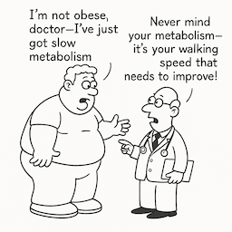

Thinking about it
Some people intend to undertake regular physical activity, but their good resolutions soon founder. Alex joined a health club with his wife but she goes regularly and he has rarely been. It’s a question of time he says – that is, he does not prioritise regular exercise very highly. He’s observed that most of the weight watchers he knows at work get into a negative cycle that is self-perpetuating. They get obsessed about their overweight or obesity and then go on a strict diet and exercise, then binge, then over-eat and sit around, feel guilty - and that develops into a repetitive saga.
Unless you change your lifestyle so that regular exercise becomes a natural part of your everyday life, you will soon relapse and regain all the weight you fought to lose as you resume your sedentary life as Rachel did.

Rachel initially lost two stones in weight over a three months period, by very strict calorie restriction coupled with vigorous exercise, swimming three times a week. But once she had reached her target weight, exercise became tedious and it became increasingly difficult to find sufficient time for regular swimming or other exercise. She prefers to sit and watch her favourite programmes on TV. And she sees food as a comforter; when she is tired or strained from a hard day at work she doesn’t want to eat a salad- she’d much rather order a curry or a pizza from the local take-away.
Debbie is a good example of a person with personal troubles that she and her husband believe are at the root of her overweight problem. Debbie’s husband says “The trouble with Debbie is that she has no willpower - junk food is a massive comfort for her and getting on weighing scales would depress her, so she doesn’t allow scales in the house.
Debbie has been hypnotised a few times to try to curb her appetite and to help her lose weight. The hypnotism seems to work for a while, but then she lapses and starts to overeat again. She is about one stone overweight for her 5’2” height and has just enough self-discipline to limit being overweight to that level.
She always puts herself down because, she believes she’s a stone overweight. She looks in the mirror and hates herself. She hates buying clothes for herself – as that’s admitting to the size she is. She doesn’t have as many clothes as her 15 year old daughter – she denies herself - and then feels she has nothing to wear when she goes out.”
She started a new business recently and before the opening night said “in a few months time I’ll be as thin as a rake with opening this shop, the long hours and worry I’ll have about the finances”. But it has not worked like that, and if anything the stress of her new business has meant that she has become heavier than she was before. Now, she often eats twice in the evening, having tea with her daughter and then a later supper with her husband when he comes home.
Joe, aged 71 years old is a retired teacher. He’s 5 feet, 3 inches tall and his current weight is 8 stones (his BMI = 19.8). He’s never been fat and has always been very active, and keen on playing sports. It is his norm to exercise regularly – he walks a lot, plays golf x 3 per week; goes to a gym regularly with his younger brother who also wants to keep fit. Joe chooses to walk up steep hills and takes an occasional jog too. Even if he’s got discomfort of some sort in his knees he will ignore it and still exercise. He checks his pulse rate whilst exercising - normal. He thinks sports/exercising: increases his self-confidence, sustains his mobility, enhances his quality of life, and helps him to overcome any challenges in his life. Meal wise: he eats no breakfast (just drinks one or two coffees); has muesli/fruit for lunch, and if he’s peckish he eats a bit of fruit, he cooks healthy food for supper at home and keeps to a small portion by splitting the c0ooked meal into two portions for that day and the next day suppers. He avoids bread – ‘it’s full of yeast’; and eats Greek style flatbread instead. He eats slowly, chews the food carefully before swallowing it, and enjoys the taste and texture of the food. He drinks one glass of wine per day in the evening (that’s two bottles per week). So Joe thinks about sticking to a healthy weight all the time, rarely breaches his daily pattern of healthy eating and exercising. So…..he hasn’t ever needed to embark on a weight loss pathway. Wish we could all describe our lives like Joe does!